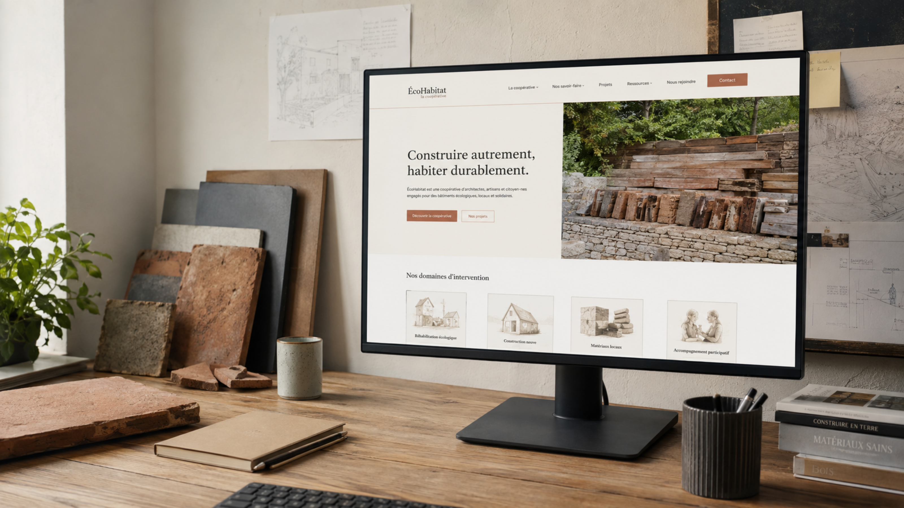

La Coopérative ÉcoHabitat
Stage de fin d'études M2 à la Coopérative ÉcoHabitat, une coopérative de l'habitat durable dans le Gers. La refonte complète du site web était la mission principale du stage, de la stratégie éditoriale à la mise en ligne.